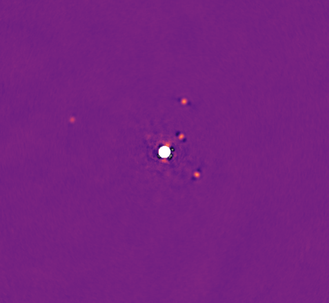
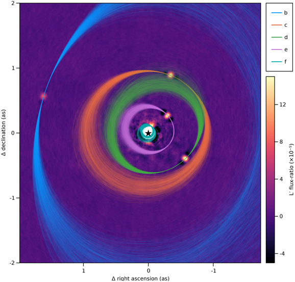

One of my largest observational projects to date has been the Deep orbital Search for Additoinal Planets in the HR8799 system (Thompson et al, 2022). The image below combines four quarter-nights of Keck NIRC2 data to display the four known planets in the HR8799 system (Marois et al, 2010).
These four planets are the first directly imaged planetary massed objects outside our solar system, and have been extensively studied.
My work on this system included observering and gathering 16 nights of NIRC2 observations, developing new ADI post-processing techniques (Thompson & Marois, 2021) and developing new orbit modelling techniques to search for faint companions in the presence of orbital motion.
This project led to the detection of a candidate fifth inner planet: a possible explanation for proper motion measurements that are in tension with atmosphere models. The orbital constraints from this program are also unique in that they come entirely from Keck L band images, an insturment that has exceptionally well-calibrated astrometry. Other instruments like GRAVITY can far exceed the precision of these measurements, but can't yet match the long time baseline.
Below is one of the highest SNR images recorded of the four confirmed planets:
And here is that same image, with orbits of the four confirmed and fifth candidate planet (with orbits derived exclusively from Keck images in this program):
I also used data from this project to create the first 100% uniformly reduced orbital animation of the system, see here:
This animation uses a keplerian motion interpolation scheme to smoothly move between images.
Currently observational work includes:
🐙